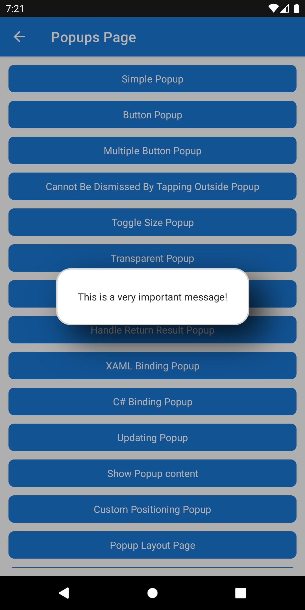

Popup
Popups are a common way of presenting information to a user that relates to their current task. Operating systems provide a way to show a message and require a response from the user, these alerts are typically restrictive in terms of the content a developer can provide and also the layout and appearance.
Note
If you wish to present something to the user that is more subtle, then check out our Toast and Snackbar options.
The Popup view allows developers to build their own custom UI and present it to their users.
The .NET MAUI Community Toolkit provides 2 approaches to create a Popup that can be shown in a .NET MAUI application. These approaches will depend on the use case. This page focuses on the simplest form of Popup - simply rendering an overlay in an application. For a more advanced approach, enabling the ability to return a result from the Popup, please refer to Popup - Returning a result.
Displaying a Popup
The .NET MAUI Community Toolkit provides multiple approaches to display a Popup in a .NET MAUI application:
- In a
ContentPage, call to thethis.ShowPopupAsync()extension method, passing in aViewto display in the Popup- Note: To further customize a Popup, please refer to the PopupOptions documentation.
- Returning a result from the
Popup- Please refer to the Popup - Returning a result documentation.
- Using the
PopupService- Please refer to the PopupService documentation.
The documentation below demonstrates the simplest way to display a Popup using the .ShowPopupAsync() extension method. This method returns a Task<IPopupResult> that will complete when the Popup closes. The PopupOptions provided are optional.
public class MainPage : ContentPage
{
// ...
async void DisplayPopupButtonClicked(object? sender, EventArgs e)
{
await this.ShowPopupAsync(new Label
{
Text = "This is a very important message!"
}, new PopupOptions
{
CanBeDismissedByTappingOutsideOfPopup = false,
Shape = new RoundRectangle
{
CornerRadius = new CornerRadius(20, 20, 20, 20),
StrokeThickness = 2,
Stroke = Colors.LightGray
}
})
/**** Alternatively, Shell.Current can be used to display a Popup
await Shell.Current.ShowPopupAsync(new Label
{
Text = "This is a very important message!"
}, new PopupOptions
{
CanBeDismissedByTappingOutsideOfPopup = false,
Shape = new RoundRectangle
{
CornerRadius = new CornerRadius(20, 20, 20, 20),
StrokeThickness = 2,
Stroke = Colors.LightGray
}
})
****/
}
}

Alternatively, a Popup can be created in XAML or C# and passed into ShowPopupAsync().
Building a Popup in XAML
The easiest way to create a Popup is to add a new .NET MAUI ContentView (XAML) to your project. This will create 2 files: a *.xaml file and a *.xaml.cs file.
Replace the contents of *.xaml with the following:
<ContentView
xmlns="http://schemas.microsoft.com/dotnet/2021/maui"
xmlns:x="http://schemas.microsoft.com/winfx/2009/xaml"
x:Class="MyProject.SimplePopup"
Padding="10">
<Label Text="This is a very important message!" />
</ContentView>
The default values for HorizontalOptions and VerticalOptions will result in the Popup being displayed in the center of page that it overlays.
A popup will present with a default Padding of 15. In order to make the SimplePopup look better a Padding of 10 has been added.
Tip
For more advanced scenarios, such as returning a result from a Popup, the code-behind file (*.xaml.cs) must inherit from Popup or Popup<T> (found in CommunityToolkit.Maui.Views). For a complete example demonstrating this, please refer to Popup - Returning a result.
Presenting a Popup Created in XAML
Once the Popup has been created in XAML, it can then be presented through the use of the Popup extension methods used on a Page, Shell or an INavigation, or through the IPopupService implementation from this toolkit.
The following example shows how to instantiate and show the SimplePopup created in the previous example through an extension method on a ContentPage.
using CommunityToolkit.Maui.Views;
public class MyPage : ContentPage
{
public async Task DisplayPopup(CancellationToken token)
{
var popup = new SimplePopup();
await this.ShowPopupAsync(popup, PopupOptions.Empty, token);
}
}
Closing a Popup
There are 2 different ways that a Popup can be closed:
- A Popup can be closed programmatically
- A Popup can be closed when a user taps outside of the popup
- Note To prevent a Popup from closing when a user taps outside of it, set
PopupOptions.CanBeDismissedByTappingOutsideOfPopuptofalse
- Note To prevent a Popup from closing when a user taps outside of it, set
1. Programmatically closing a Popup
There are 3 options to close a Popup programatically:
- In a
ContentPage, use thethis.ClosePopupAsync()extension method - In an app using
Shell, useShell.Current.ClosePopupAsync()extension method - Use the
PopupService- Please refer to the PopupService documentation.
In the example below, we demonstrate how to use this.ClosePopupAsync() in a ContentPage. To learn how to use PopupService to close a Popup, please refer to the PopupService documentation.
using CommunityToolkit.Maui.Views;
public class MyPage : ContentPage
{
public async Task DisplayAutomaticallyClosingPopup(Timespan displayTimeSpan, CancellationToken token)
{
var popup = new SimplePopup();
// This Popup is closed programmatically after 2 seconds
this.ShowPopup(popup, new PopupOptions
{
CanBeDismissedByTappingOutsideOfPopup = false
});
await Task.Delay(TimeSpan.FromSeconds(displayTimeSpan), token);
await this.ClosePopupAsync(token);
/**** Alternatively, Shell.Current can be used to close a Popup
Shell.Current.ShowPopup(popup, new PopupOptions
{
CanBeDismissedByTappingOutsideOfPopup = false
});
await Task.Delay(TimeSpan.FromSeconds(displayTimeSpan), token);
await Shell.Current.ClosePopupAsync(token);
***/
}
}
2. Tapping outside of the Popup
By default a user can tap outside of the Popup to dismiss it. This can be controlled through the use of the PopupOptions.CanBeDismissedByTappingOutsideOfPopup property. Setting this property to false will prevent a user from being able to dismiss the Popup by tapping outside of it. See PopupOptions for more details.
Lifecycle behavior
It is important to note that a Popup will be displayed inside ContentPage which is then shown modally in a .NET MAUI application. The impact of this will result in any calling Page to have the following lifecycle events to be called:
| Action | Lifecycle event |
|---|---|
| Show popup | Current Page will receive OnNavigatingFrom, OnDisappearing and OnNavigatedFrom |
| Close popup | Previous Page will receive OnAppearing and OnNavigatedTo |
To determine if OnNavigatedTo(NavigatedToEventArgs) was called by dismissing Popup, you can use the WasPreviousPageAToolkitPopup() extension method:
protected override void OnNavigatedTo(NavigatedToEventArgs args)
{
base.OnNavigatedTo(args);
if (args.WasPreviousPageACommunityToolkitPopupPage())
{
// If true, `OnNavigatedTo` was called by dismissing a Popup
}
}
To determine whether OnNavigatingFrom(NavigatingFromEventArgs) or OnNavigatedFrom(NavigatedFromEventArgs) was called by opening a Popup, you can use the IsDestinationPageACommunityToolkitPopupPage() extension method:
Warning
As per https://github.com/dotnet/maui/issues/34073, OnNavigatingFrom is currently not working properly, but will be fixed in a near future
protected override void OnNavigatingFrom(NavigatingFromEventArgs args)
{
base.OnNavigatingFrom(args);
if (args.IsDestinationPageACommunityToolkitPopupPage())
{
// If true, `OnNavigatingFrom` was called by starting a Popup
}
}
protected override void OnNavigatedFrom(NavigatedFromEventArgs args)
{
base.OnNavigatedFrom(args);
if (args.IsDestinationPageACommunityToolkitPopupPage())
{
// If true, `OnNavigatedFrom` was called by starting a Popup
}
}
PopupOptions
The PageOverlayColor, Shape, Shadow can all be customized for Popup. See PopupOptions for more details.
Setting Popup Defaults
To override the default values for every Popup in your app, you can call .SetPopupDefaults() and .SetPopupOptionsDefaults() when initializing .NET MAUI Community Toolkit.
The DefaultPopupSettings provided will be applied as the default value for every Popup in your app, and the DefaultPopupOptionsSettings will be applied as the default value for PopupOptions every time .ShowPopup() is called.
.UseMauiCommunityToolkit(static options =>
{
options.SetPopupDefaults(new DefaultPopupSettings
{
CanBeDismissedByTappingOutsideOfPopup = true,
BackgroundColor = Colors.Orange,
HorizontalOptions = LayoutOptions.End,
VerticalOptions = LayoutOptions.Start,
Margin = 72,
Padding = 4
});
options.SetPopupOptionsDefaults(new DefaultPopupOptionsSettings
{
CanBeDismissedByTappingOutsideOfPopup = true,
OnTappingOutsideOfPopup = async () => await Toast.Make("Popup Dismissed").Show(CancellationToken.None),
PageOverlayColor = Colors.Orange,
Shadow = null,
Shape = null
});
})
Events
The Popup class provides the following events that can be subscribed to.
| Event | Description |
|---|---|
Closed |
Occurs when the Popup is closed. |
Opened |
Occurs when the Popup is opened. |
Examples
You can find an example of this feature in action in the .NET MAUI Community Toolkit Sample Application.
API
You can find the source code for Popup over on the .NET MAUI Community Toolkit GitHub repository.